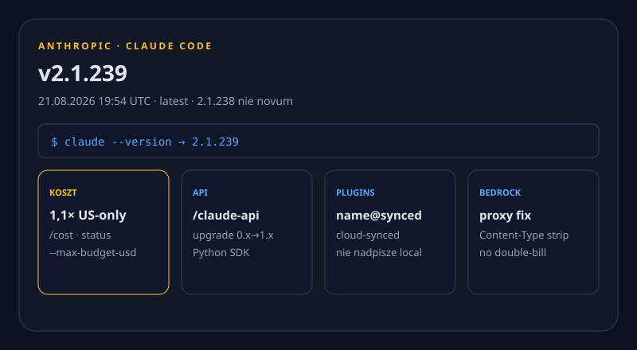
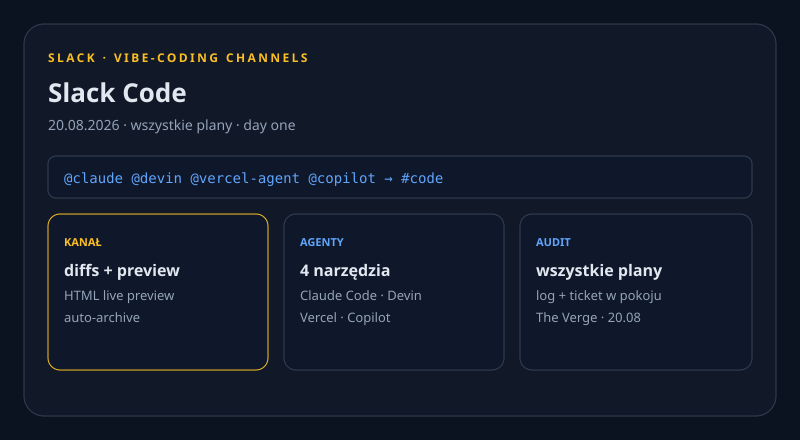

ChatGPT w Messages. Claude Code 2.1.238. Slack Code.
Nowe vs 20.08: Messages plugin, Code 2.1.238, Academy, Grok Build wszystkie plany, Slack Code, Ramp Q3, Alibaba −75%, Ars Grok exfil. X: 402. Reddit: 403. Dziura ≠ cisza.

ChatGPT wysyła SMS-y: plugin Apple Messages
NOWE Desktop ChatGPT na Macach Apple silicon czyta i szuka iMessage, SMS i RCS, potem draftuje, kasuje lub wysyła. Domyślnie zgoda per wiadomość i odbiorca; OpenAI odradza trwałe zatwierdzenie.
REPORTED OpenAI do Bloomberga (cyt. TC): plugin „runs locally” i „nie indeksuje wszystkich wiadomości”. Mechanika nadal niejasna. Hardware lock: tylko Apple silicon.


Produkty i modele
Claude Code 2.1.238
NOWE 20.08 20:33 UTC (22:33 CEST): keybindingFlavor readline vs classic Ctrl+W, marketplace headersHelper, flagi runnera --defer-shutdown-max-min i proxy-authorization. To 2.1.238; 2.1.237 nie jest novum.
Claude Academy
NOWE 20.08: publiczna AI-fluency (4D Framework, human–agent teams) na academy.claude.com + skill ze ścieżkami. Companion: computer use HIPAA-eligible, Files 5× rpm — nie drugi launch Platform GA 19.08.
Grok Build na każdym planie
NOWE 19.08 (wczoraj pominięte): aplikacje, gry, strony z SuperGrok Heavy Early Beta na web, iOS i Android — wszystkie plany. grok.me, remix, custom domains, export GitHub; osobne od CLI.
Prompt Caching + obraz + GitLab
NOWE 20.08: dashboard Prompt Caching (hit rate, reads/write) i gpt-image-2 z przezroczystym tłem png/webp (preview). Codex cloud GitLab beta 19.08 — też wczoraj pominięte.
Slack Code
NOWE 20.08: tag Claude Code / Devin / Vercel Agent / Copilot → kanał z diffs, HTML preview, auto-archive, audit. Wszystkie plany Slack, day one — vibe-coding tam, gdzie żyje ticket.
Laby i research
OpenAI AI Futures
NOWE 20.08 Dean Ball: blog Strategic Futures — jak zachować prawa jednostki przy transformative AI. Widoki autora, nie polityka OpenAI. Nie mylić z aifutures.org.
Gemma: 1 mld pobrań
NOWE 20.08: rodzina Gemma >1 mld downloadów; 100k+ wariantów. NASA on-orbit, NHA/Aarogya Setu 2.0, C2S-Scale. Awesome Gemma. Student hub = wczoraj, nie recykling.
Mistral Agentic Search
NOWE 20.08: pętla search/open/navigate/read/grep. FinanceBench (vendor, default stack) 26,7%→86%. Cloud + on-prem. Liczby = bench Mistral, nie niezależny audit.
Biznes
Ramp: OpenAI dogania Anthropic
NOWE FACT na próbce Ramp ~70k US firm (nie census). Lipiec: Anthropic 43,5% vs OpenAI 39,7%. Q3-to-date OpenAI rośnie szybciej. Kharazian: GPT-5.6 Sol.
Alibaba Q1: zysk −75%
NOWE FACT earnings 20.08: przychód +9% ¥269 mld; zysk ¥10,5 mld (−75%); capex +75% ¥67,7 mld; AI cloud +45% ¥48,4 mld. Wu: AI product 12. kwartał triple-digit.
Nevada: Tesla 5k / Waymo 1k / Uber 1k
NOWE FACT NTA 20.08: Clark County — Tesla do 5 tys. robotaxi, Waymo 1 tys., Uber 1 tys. (Motional+Zoox). Sufit 8 tys. / 12 mies. Las Vegas = trójstronna walka.
Open-source / dev
Ox Alpha — stealth, nienazwany lab
NOWE TREND OpenRouter stealth/ox-alpha: 1,05M ctx, darmowy tydzień. Nikt nie wziął na siebie. HN 70. To routing event, nie release labu.
mattpocock/skills
TREND GH daily: +2 192★. „Skills for Real Engineers” z .agents. Meta plików skills zjada GitHub. Nie nowy model.
Narzędzia
Piano autocomplete 125M
NOWE Show HN 539: on-device transformer, Core ML, ~108 nut/s na iPhonie 15. Produkt, nie kolejny chat UI. Najczystszy Show HN okna.
Huzzah — pseudokod jako źródło
NOWE Show HN 258: zapisujesz intent jako pseudokod, kod jest pochodną. PoC — narzędzie dnia przeciw agent-fatigue.
Gadżety
Okulary Meta w pracy
NOWE SHIPPING Verge 20.08: retail/service filmowani „dla pranków”; ICE już zakazał. Super-sensing next-gen = REPORTED (FT). Labor, nie SKU.
DJI Pocket 4P — szara strefa US
NOWE SHIPPING Verge: Osmo Pocket 4/4P już w USA przez Temu/Ali/eBay mimo banu importu FCC — DJI: nie oficjalny kanał (ban = import, nie posiadanie). MemoMind KS zamyka 27.08 — TREND, nie novum.
Sygnały X + Reddit + HN
X HOLE user-X połączony (@ProductRootIO). Po get_users_me → 402 credits depleted. search_posts_all nigdy nie użyte. Bez scrapu Chrome. Dziura ≠ cisza.
REDDIT HOLE r/LocalLLaMA, r/ClaudeAI, r/OpenAI: 403. Nie wymyślamy wątków.
HN: GitHub outage PM 424 · piano 539 · Huzzah 258 · Ox Alpha 70 · Codex Bedrock 10× (niezweryfikowany bug). Ars Grok exfil: xAI wiedziało od czerwca. REPORTED Reuters/Yahoo: student UT Dallas vs AISI Mythos 5.
Co warto dziś sprawdzić
- Messages plugin — FACT shipped, zgoda per send. TC · Learn
- Code 2.1.238 (nie 2.1.237). v2.1.238
- Academy + Grok Build wszystkie plany. Academy · Build
- Slack Code + cache dashboard + GitLab beta. Slack · API
- Ramp Q3 + Alibaba −75% + Nevada 5k/1k/1k. Ramp · Alibaba · Nevada
- Ars Grok exfil + piano 539 + Huzzah 258 + Ox Alpha. Ars · piano · Ox
- Meta glasses labor + DJI 4P grey. glasses · DJI
3 tweets ready to post
https://techcrunch.com/2026/08/20/chatgpt-can-now-send-texts-for-you-with-new-apple-messages-plugin/
https://github.com/anthropics/claude-code/releases/tag/v2.1.238
https://www.theverge.com/tech/982628/slack-code-vibe-coding-channels-launch